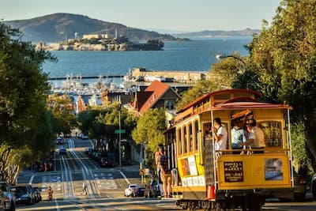

I love San Francisco because it is a city on the bay. It has many exciting places to visit such as Pier 39, Coit Tower, the Golden Gate bridge, and Lombard Street.
I had the opportunity to ride the San Francisco cable cars once and it was a very memorable experience. I got to speak with the driver and he showed us how the brake system works which was really interesting.
